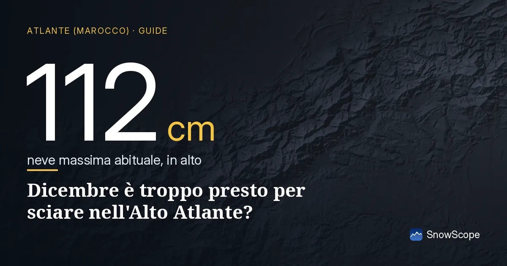

Dicembre è troppo presto per sciare nell'Alto Atlante?
Sì, il più delle volte, dicembre è presto nell'Alto Atlante. Nel nostro storico di 46 inverni, la metà montagna di Oukaïmeden ha 18 cm di neve in un dicembre tipico, contro 53 cm a marzo, il suo mese più nevoso. Ma presto non vuol dire impossibile.
Le previsioni neve in tempo reale per Oukaimden ski resort nell'app SnowScopeAltezza neve, allerte powder e mappa 3D, gratis.
La scala dei mesi
A metà montagna, intorno ai 2929 m, l'altezza neve mensile tipica sale lentamente: 3 cm a novembre, 18 cm a dicembre, 28 cm a gennaio, 44 cm a febbraio e 53 cm a marzo, prima di ridiscendere a 11 cm ad aprile. In vetta, a 3258 m, è 20 cm a dicembre, 31 cm a gennaio, 50 cm a febbraio e 58 cm a marzo.
Dicembre si colloca quindi a circa un terzo del percorso. Il picco di un inverno tipico raggiunge i 92 cm a metà montagna, ma quasi sempre dopo gennaio.

Perché l'Atlante parte in ritardo
Qui la neve non si accumula in strati regolari come sulle Alpi. Arriva con poche grandi perturbazioni, spesso separate da lunghi periodi secchi e soleggiati che la sciolgono o la trasformano. Un dicembre può quindi ricevere una bella nevicata e poi perdere metà della sua neve prima di Natale.
I numeri lo dimostrano: il 15 dicembre, il 20 % degli inverni ha una metà montagna quasi nuda, mentre un dicembre generoso, uno su dieci inverni, vi ha 50 cm.

La settimana migliore, in numeri
Sui nostri 46 inverni, la settimana più sicura a metà montagna è la settimana 9, fine febbraio: il 59 % degli inverni ha lì una neve media di almeno 50 cm, per un'altezza tipica di 59 cm. A dicembre, la stessa quota non supera mai il 13 % in nessuna settimana.
Il numero di giorni con neve al suolo è di 138 in un inverno tipico: la neve resta a lungo, ma è sottile all'inizio.
Allora, dicembre o no?
Se potete partire solo a dicembre, scegliete la seconda metà del mese e aspettate una nevicata: il 31 dicembre, il 48 % degli inverni ha almeno 25 cm a metà montagna. Se avete scelta, febbraio e marzo sono nettamente migliori. L'inverno scorso ha mostrato entrambe le facce: un Natale 2025 a 78 cm a metà montagna, un inverno finito a 132 cm.
Consigli per sciatori
- Per un viaggio pianificato con largo anticipo, puntate a fine febbraio o marzo.
- Per dicembre, restate flessibili: partite dopo una tempesta, non a una data fissa.
- Seguite la nostra mappa e le previsioni a due settimane prima di prenotare il trasporto.
- Neve sottile di inizio stagione: attenzione alle rocce sotto la superficie, restate sulle piste battute.
Riferimenti e crediti
- Wikipedia, Oukaïmeden (read 13 November 2026) en.wikipedia.org/wiki/Ouka%C3%AFmeden
- OpenSkiMap (mapped lifts and runs) openskimap.org/
Su questi numeri
Numeri della neve: storico neve SnowScope, 46 inverni passati (1980-81 - 2025-26) alle quote indicate (base, metà, vetta), una ricostruzione della neve passata per un'area corretta per la quota (basata su ERA5-Land; Snow_Hydro 1 km per il Marocco), non i bollettini della località. Neve attuale: la mappa SnowScope. Impianti, piste e quote: mappatura OpenSkiMap. Prezzi: le pagine ufficiali elencate qui sotto, lette il 13 novembre 2026; i prezzi dinamici cambiano con la data e la domanda.
Cita questo articolo
Per ricerca, didattica o stampa: numeri e grafici sono liberamente riutilizzabili con licenza CC BY 4.0 citando così.
SnowScope (2026), Dicembre è troppo presto per sciare nell'Alto Atlante?, https://snowscope.app/blog/it/2026/11/decembre-trop-tot-pour-skier-haut-atlas.html, consultato il 2026-11-14
SnowScope (Atlas Labs). (2026, November 14). Dicembre è troppo presto per sciare nell'Alto Atlante?. SnowScope snow reports. https://snowscope.app/blog/it/2026/11/decembre-trop-tot-pour-skier-haut-atlas.html
BibTeX
@misc{snowscope2026decembretroptotpourskier,
author = {{SnowScope (Atlas Labs)}},
title = {Dicembre è troppo presto per sciare nell'Alto Atlante?},
year = {2026},
month = nov,
howpublished = {\url{https://snowscope.app/blog/it/2026/11/decembre-trop-tot-pour-skier-haut-atlas.html}},
note = {Published 2026-11-14 13:29 UTC; accessed 2026-11-14}
}· CC BY 4.0 · Metodi, dati e strumenti →
Oukaimden ski resort: neve e temperatura per quota, quest'inverno vs lo scorso (strumenti) →
Segui Oukaimden ski resort
Gratis: un messaggio quando arriva la neve e il meteo ogni mattina.